01Overview
This week is one task: use ROS 2 Lyrical and TurtleSim to draw a name with code. Two nodes are written in a Python package. The first node, sachin_name_writer, draws the name SACHIN by teleporting the turtle along the strokes of a small vector font. The second node, sachin_pose_monitor, listens to the turtle and reports how far the pen travelled. Everything runs on Ubuntu in VirtualBox.
02Concepts
Node
A small program that does one job and can send or receive data.
Topic
A named channel. A node publishes to it and other nodes subscribe to it.
Service
A request and reply call, used here to teleport the turtle, set the pen and clear the canvas.
Workspace
A folder with a src folder for packages. colcon builds it into build, install and log.
Vector font
Each letter is a list of strokes on a 1 by 2 grid, joined by straight lines.
Subscription
A node receives every message sent on a topic and gets a callback for each one.
03Task Flow
04Install
The packages were installed with apt. The terminal reported that ros-lyrical-desktop, ros-lyrical-turtlesim and python3-colcon-common-extensions were already at the newest version, so nothing new was installed.
sudo apt update
sudo apt install ros-lyrical-desktop ros-lyrical-turtlesim python3-colcon-common-extensions -y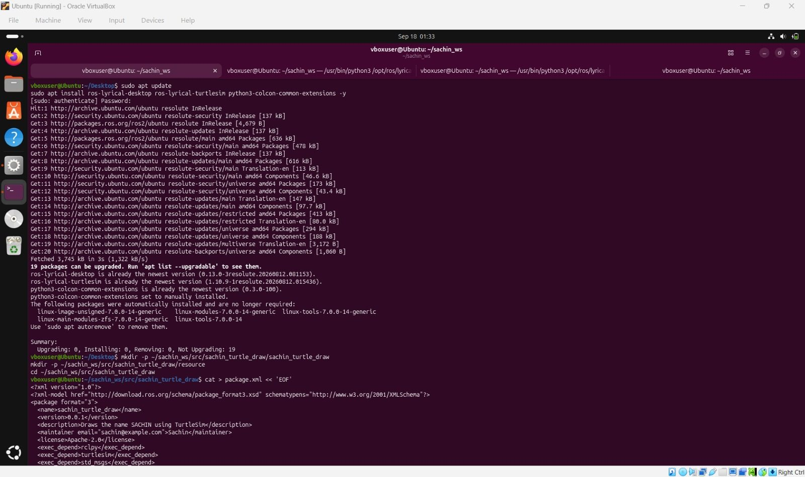
05Workspace
The workspace is the folder ~/sachin_ws. Its src folder holds the package. After the first build, colcon adds build, install and log.
mkdir -p ~/sachin_ws/src/sachin_turtle_draw/sachin_turtle_draw
mkdir -p ~/sachin_ws/src/sachin_turtle_draw/resource
cd ~/sachin_ws/src/sachin_turtle_draw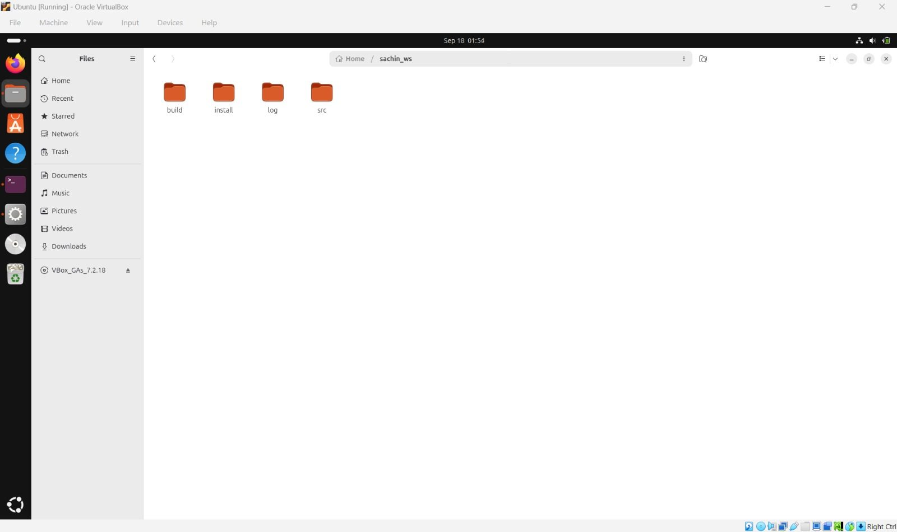
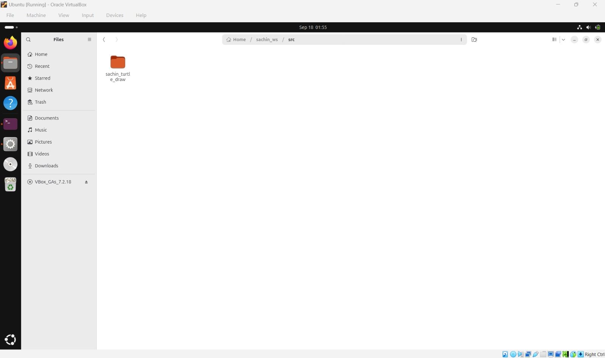
06TurtleSim
TurtleSim is started in its own terminal after sourcing ROS 2. It spawns turtle1 in the middle of the window at x = 5.544445, y = 5.544445 and angle 0.
source /opt/ros/lyrical/setup.bash
ros2 run turtlesim turtlesim_node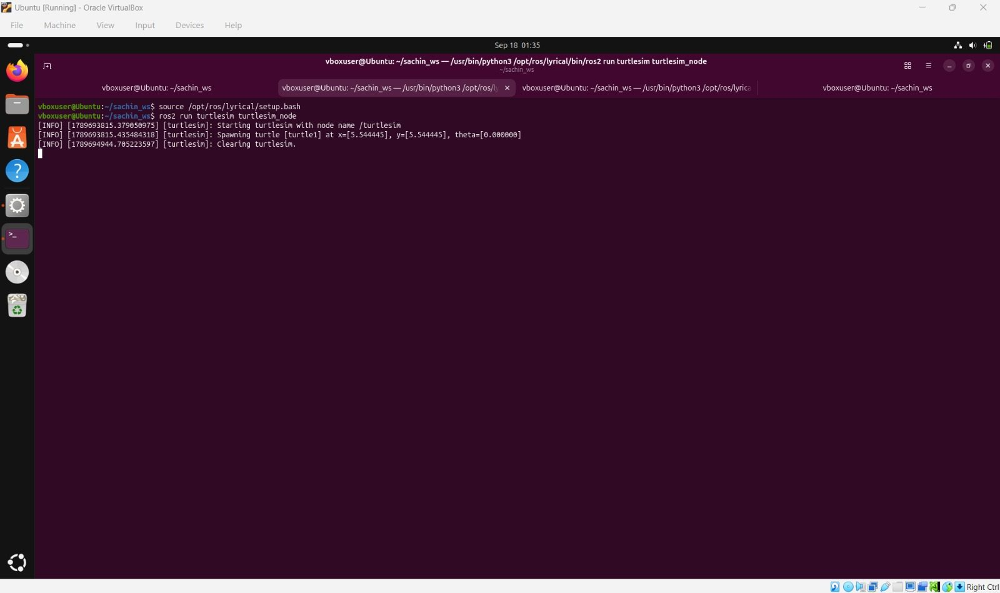
07Package: package.xml
The package is declared as format 3 with the name sachin_turtle_draw, version 0.0.1 and the description "Draws the name SACHIN using TurtleSim". The licence is Apache-2.0 and the build type is ament_python.
| Dependency | Type |
|---|---|
| rclpy | exec_depend |
| turtlesim | exec_depend |
| std_msgs | exec_depend |
| geometry_msgs | exec_depend |
| ament_copyright, ament_flake8, ament_pep257, python3-pytest | test_depend |
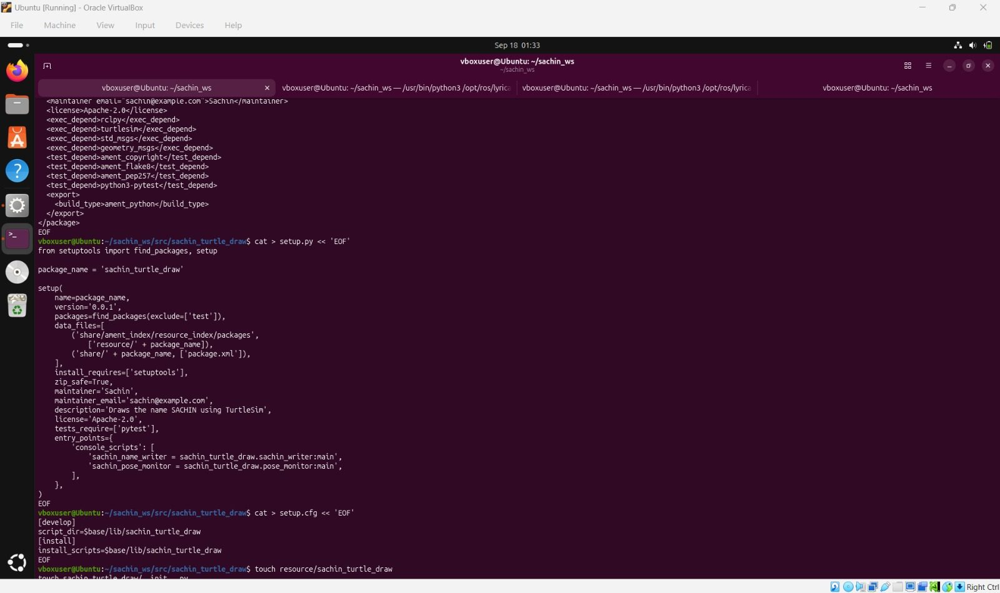
08Package: setup.py and setup.cfg
Two commands are registered as console scripts. After a build, each one can be started with ros2 run.
| Command | Runs |
|---|---|
| sachin_name_writer | sachin_turtle_draw.sachin_writer:main |
| sachin_pose_monitor | sachin_turtle_draw.pose_monitor:main |
[develop]
script_dir=$base/lib/sachin_turtle_draw
[install]
install_scripts=$base/lib/sachin_turtle_draw09Package: Folder Layout
The finished package folder, checked in the file manager.
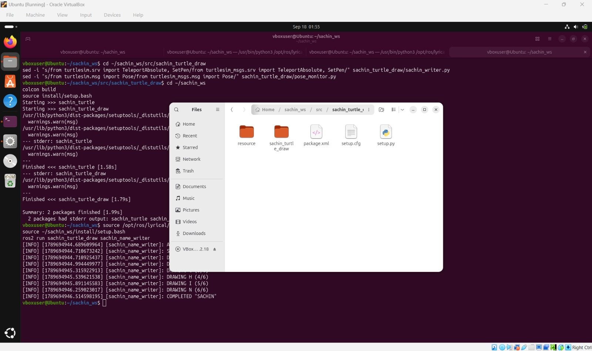
10Name Writer: Vector Font
Nine points on a 1 by 2 grid are named: TL, TM, TR (top), ML, MR (middle) and BL, BM, BR (bottom). Each letter is built from these points.
| Letter | Strokes (points joined in order) |
|---|---|
| S | TR, TL, ML, MR, BR, BL |
| A | BL, TL, TR, BR and ML, MR |
| C | TR, TL, BL, BR |
| H | TL, BL and TR, BR and ML, MR |
| I | TL, TR and TM, BM and BL, BR |
| N | BL, TL, BR, TR |
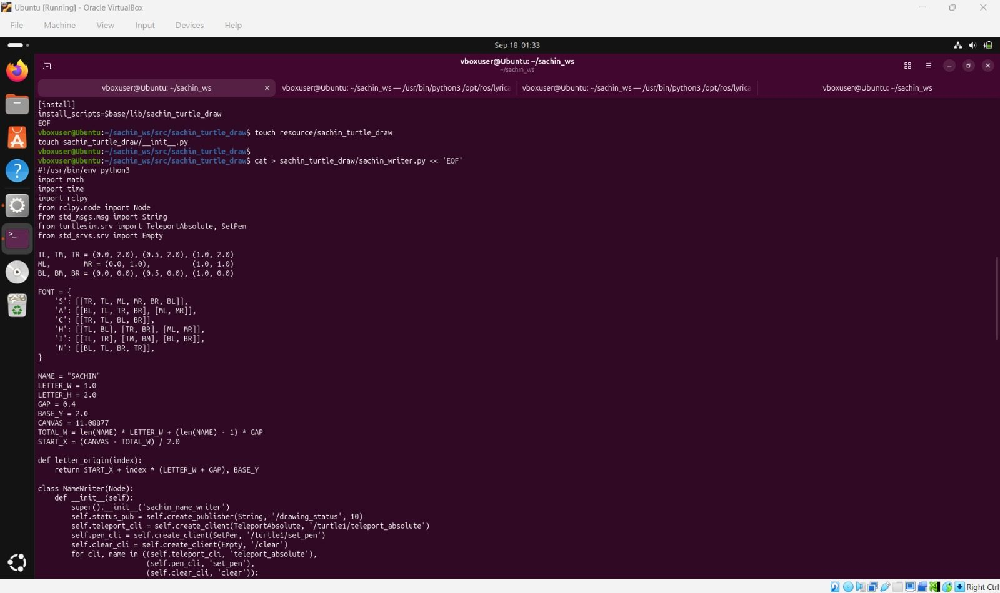
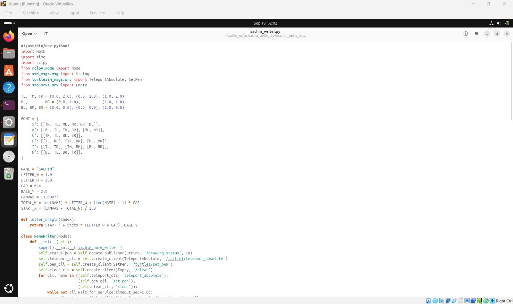
11Name Writer: Layout
The name is centred on the TurtleSim canvas, which is about 11.09 units wide.
| Constant | Value |
|---|---|
| LETTER_W | 1.0 |
| LETTER_H | 2.0 |
| GAP | 0.4 |
| BASE_Y | 2.0 |
| CANVAS | 11.08877 |
| TOTAL_W | 6 x 1.0 + 5 x 0.4 = 8.0 |
| START_X | (11.08877 - 8.0) / 2 = 1.544 |
12Try It: Draw SACHIN
Draw the letters with the same font data as the node. This is a browser version, not the real TurtleSim.
Draw SACHIN
Pen up. Press Draw to start.
13Name Writer: Code
The node creates a publisher and three service clients, waits until all services are available, and then calls draw_name().
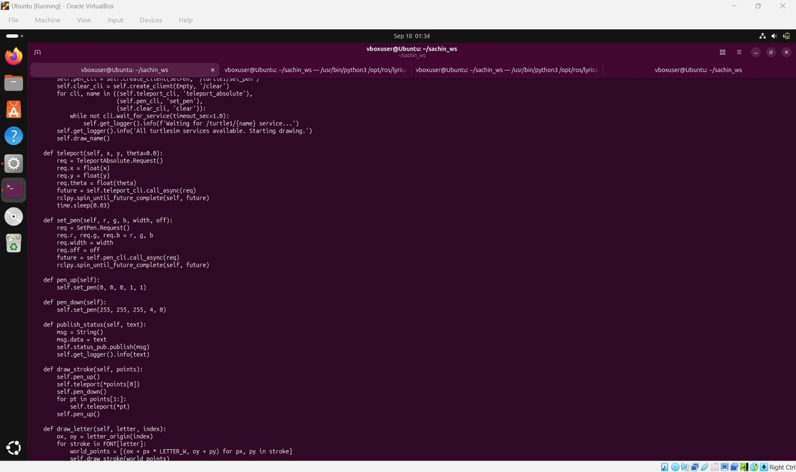
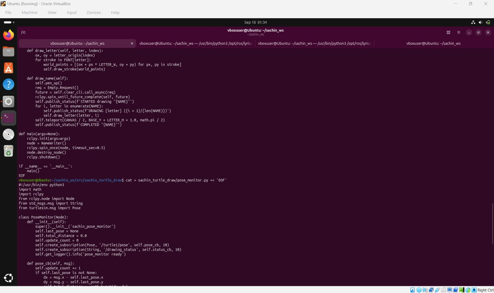
| Function | What it does |
|---|---|
| teleport | Calls /turtle1/teleport_absolute and waits for the reply, then sleeps 0.03 s so the window can draw it |
| pen_up / pen_down | set_pen with the pen off (black, width 1) or on (white, width 4) |
| draw_stroke | Pen up, go to the first point, pen down, go through the rest, pen up |
| draw_letter | Draws every stroke of one letter at its position |
| draw_name | Clears the canvas, publishes the status, draws each letter, then parks the turtle above the name |
14Pose Monitor: Code
Two subscriptions are created. In pose_cb every pose adds to a counter, and the distance from the last pose is added with math.hypot. In status_cb each status is logged, and the report is printed when the text starts with COMPLETED.
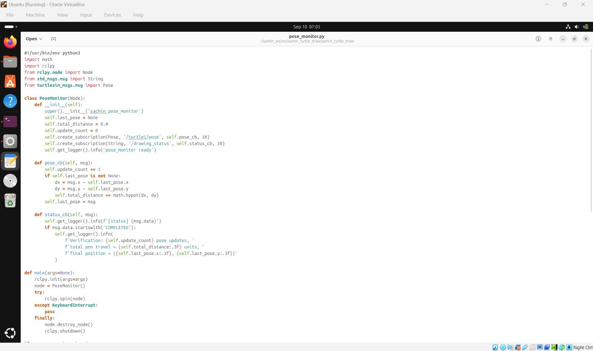
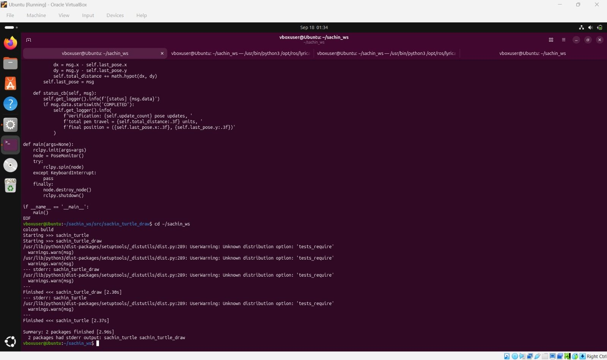
15Pose Monitor: Callbacks
| Callback | Topic | Action |
|---|---|---|
| pose_cb | /turtle1/pose | Count the update, add hypot(dx, dy) to the total, store the pose |
| status_cb | /drawing_status | Log the text. On COMPLETED print the number of pose updates, the total pen travel and the final position |
16Check the Number
The reported total pen travel was 50.435 units. This can be checked: the monitor measures every jump, including the pen-up moves between strokes, not only the lines that are drawn. The total below is worked out from the same font and layout.
Pen travel, worked out
17Build
The first build finished 2 packages (sachin_turtle and sachin_turtle_draw). Both printed only the tests_require warning. The install folder then contained both packages.
cd ~/sachin_ws
colcon build
source install/setup.bash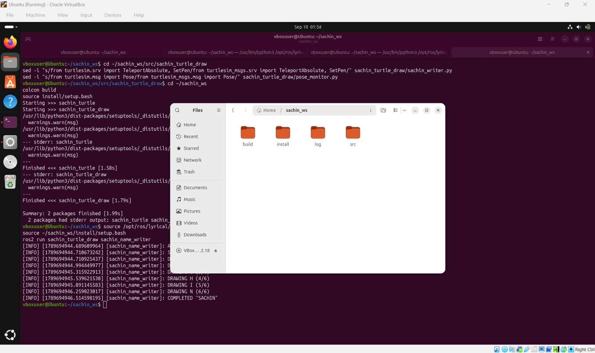
18Debugging
Three problems were found and solved in turn. Open each one.
1. Package sachin_turtle_draw not found
The ros2 run command ran before the install setup file was sourced. After the install folder was checked and sourced, the package was found.
2. ModuleNotFoundError: No module named turtlesim
The code imported Pose from turtlesim.msg, but Python could not find a module called turtlesim (Python 3.14.4). The package list of ros-lyrical-turtlesim showed only the executables, and a search found the message types in turtlesim_msgs.
3. The fix
The imports were changed with sed to use turtlesim_msgs, and the workspace was built again.
sed -i "s/from turtlesim.srv import TeleportAbsolute, SetPen/from turtlesim_msgs.srv import TeleportAbsolute, SetPen/" sachin_turtle_draw/sachin_writer.py
sed -i "s/from turtlesim.msg import Pose/from turtlesim_msgs.msg import Pose/" sachin_turtle_draw/pose_monitor.py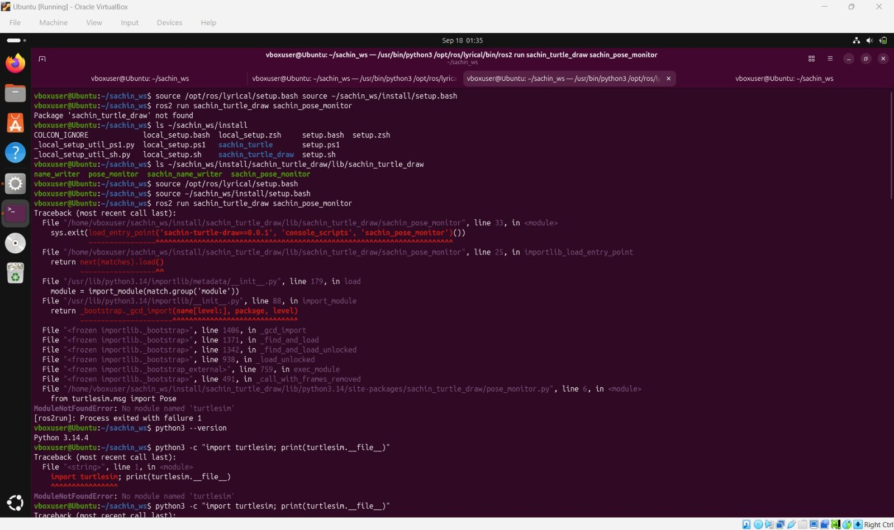
19Run
Three terminals were used: TurtleSim, the pose monitor and the name writer. The writer printed STARTED, DRAWING for each letter, and COMPLETED. The monitor received the same messages and then printed its report.
| Result | Value |
|---|---|
| Letters drawn | 6 (S, A, C, H, I, N) |
| Pose updates seen by the monitor | 3280 |
| Total pen travel | 50.435 units |
| Final turtle position | (5.544, 5.000) |
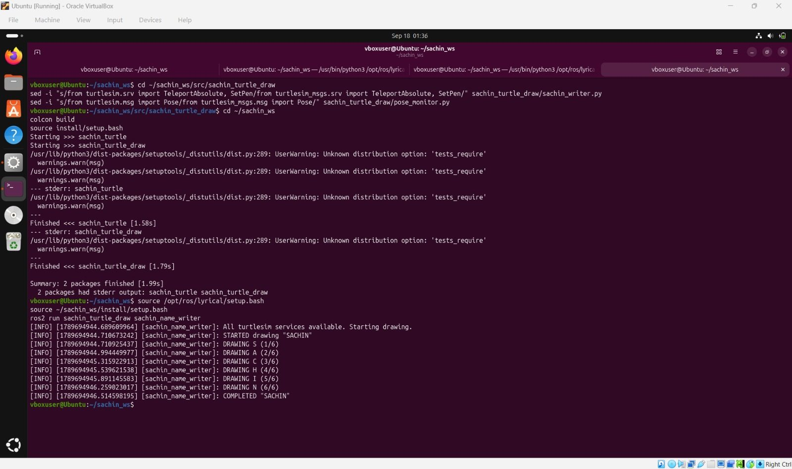
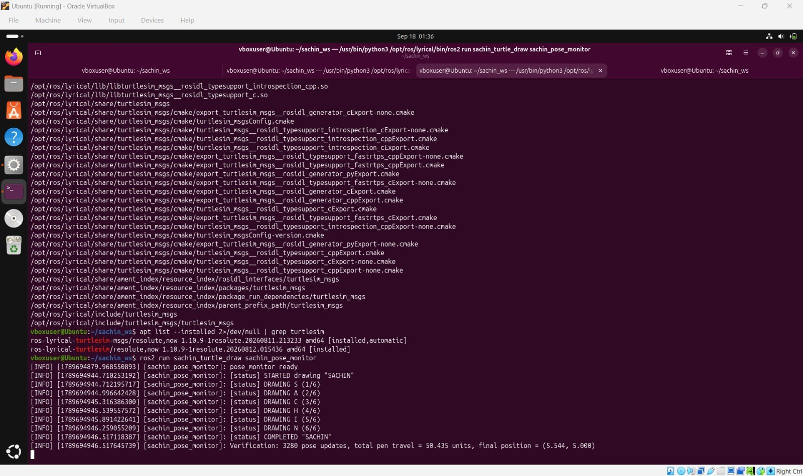
20Result
The name SACHIN in white pen on the blue TurtleSim canvas, with the turtle parked above it.
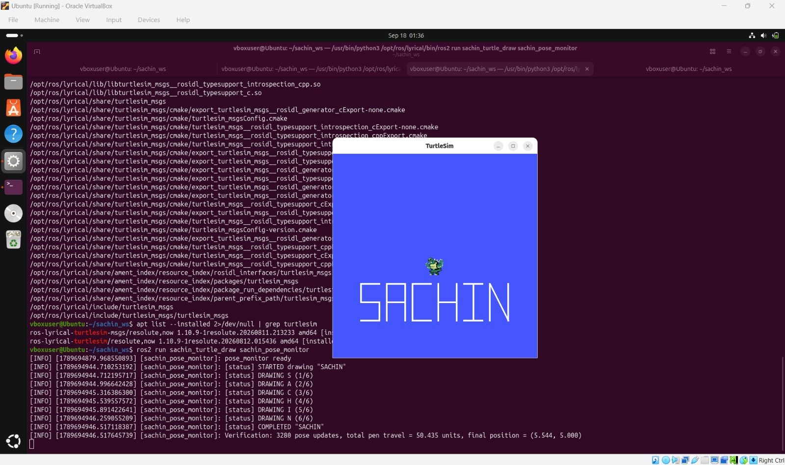
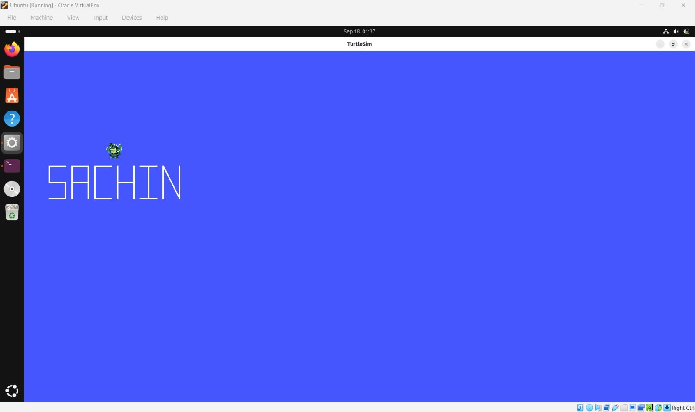
21Steps
Tick each step as you go. Your ticks are saved in this browser.
22Observations
- Source in every new terminal: ROS commands only work after the setup file is sourced, and again after each build.
- Teleport gives exact lines: the turtle never drifts, because it is placed directly at each point.
- Pen up between strokes stops unwanted lines between letters.
- The monitor measures every pose change, including pen-up moves, which is why its total is larger than the drawn lines alone.
- The drawing is fast: the log runs from the start of S to the end of N in about 1.5 seconds.
23Reflection
The error taught more than the working run. Reading the message, listing the installed files and finding that the types live in turtlesim_msgs is the same way any ROS 2 problem is debugged. Splitting the work into one node that draws and one that observes also shows the main idea of ROS 2: small nodes joined by topics, each with one clear job.
24Files
Workspace ~/sachin_ws with package sachin_turtle_draw: package.xml, setup.py, setup.cfg, resource/sachin_turtle_draw, sachin_turtle_draw/sachin_writer.py and sachin_turtle_draw/pose_monitor.py. Run with ros2 run sachin_turtle_draw sachin_name_writer and ros2 run sachin_turtle_draw sachin_pose_monitor.